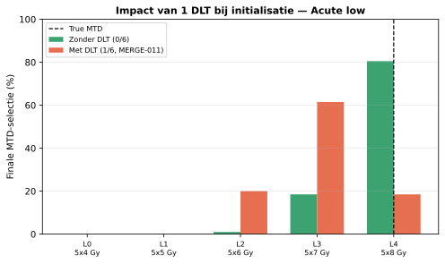
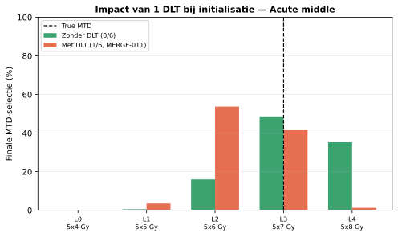
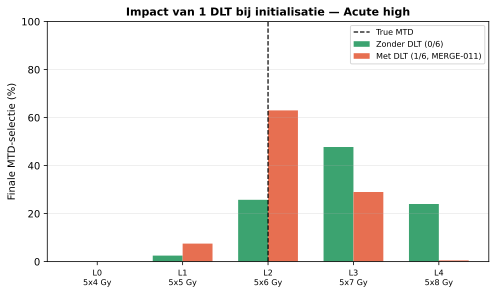
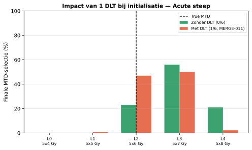
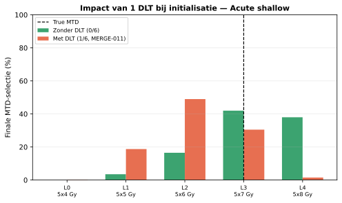

Compares TITE-CRM (EWOC off, burn-in off) simulated with the L1 initialization cohort (6 patients) having 0 vs. 1 observed acute DLT — the latter matching the currently reported SAE for patient MERGE-011, whose causality was assessed as "possible" (not "unrelated"). All other settings match the design compared against 6+3 in Sama's slides: target acute 0.20, target subacute 0.33, EWOC off, burn-in off, 400 simulations per scenario/arm. The 6+3 design is included purely as a reference from the same true-toxicity scenarios; it has no equivalent mechanism for a fixed pre-history, so it always starts from a freshly simulated 6-patient cohort (not necessarily 1 DLT).
| scenario | dlt_at_init | true_mtd_label | correct_mtd_pct | too_high_pct | too_low_pct | mean_acute_tox | mean_subacute_tox | mean_duration_weeks |
|---|---|---|---|---|---|---|---|---|
| Acute low | False | L4 (5x8 Gy) | 80.5 | 0.0 | 19.5 | 2.9 | 3.7 | 96.0 |
| Acute low | True | L4 (5x8 Gy) | 18.5 | 0.0 | 81.5 | 1.8 | 2.4 | 96.0 |
| Acute middle | False | L3 (5x7 Gy) | 48.2 | 35.2 | 16.5 | 4.7 | 3.2 | 96.0 |
| Acute middle | True | L3 (5x7 Gy) | 41.5 | 1.2 | 57.2 | 3.0 | 2.1 | 96.0 |
| Acute high | False | L2 (5x6 Gy) | 25.8 | 71.8 | 2.5 | 5.2 | 3.1 | 96.0 |
| Acute high | True | L2 (5x6 Gy) | 63.0 | 29.5 | 7.5 | 3.5 | 1.9 | 96.0 |
| Acute steep | False | L2 (5x6 Gy) | 23.0 | 77.0 | 0.0 | 5.4 | 3.0 | 96.0 |
| Acute steep | True | L2 (5x6 Gy) | 47.0 | 52.2 | 0.8 | 3.0 | 2.1 | 96.0 |
| Acute shallow | False | L3 (5x7 Gy) | 42.0 | 38.0 | 20.0 | 4.5 | 3.3 | 96.0 |
| Acute shallow | True | L3 (5x7 Gy) | 30.5 | 1.5 | 68.0 | 3.5 | 1.8 | 96.0 |





| scenario | true_mtd_label | correct_mtd_pct | too_high_pct | too_low_pct | mean_acute_tox | mean_subacute_tox | mean_duration_weeks |
|---|---|---|---|---|---|---|---|
| Acute low | L4 (5x8 Gy) | 3.2 | 0.0 | 96.8 | 1.9 | 2.5 | 109.8 |
| Acute middle | L3 (5x7 Gy) | 18.0 | 0.2 | 81.8 | 2.8 | 2.0 | 96.5 |
| Acute high | L2 (5x6 Gy) | 39.8 | 14.0 | 46.2 | 3.2 | 1.8 | 91.1 |
| Acute steep | L2 (5x6 Gy) | 65.0 | 10.2 | 24.8 | 2.9 | 1.9 | 100.5 |
| Acute shallow | L3 (5x7 Gy) | 13.2 | 0.0 | 86.8 | 3.5 | 1.9 | 88.9 |